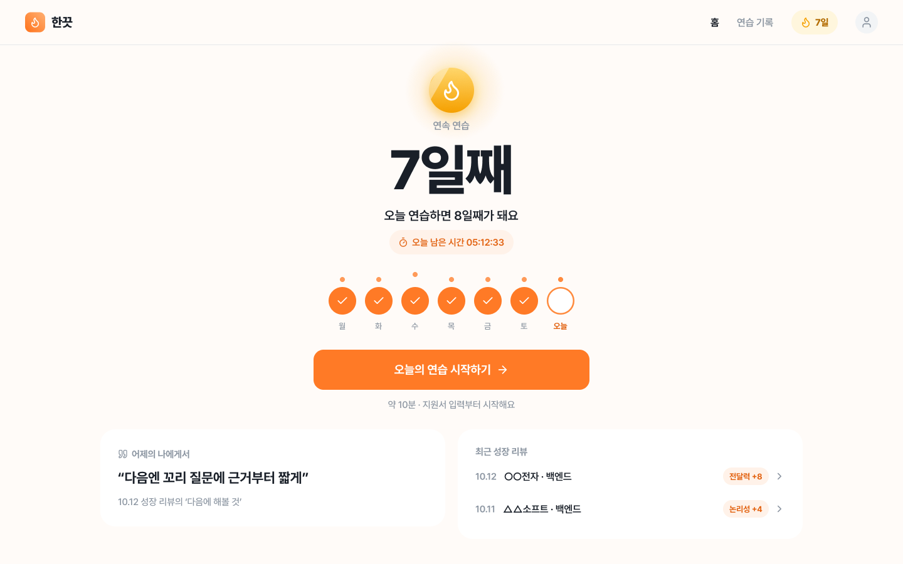
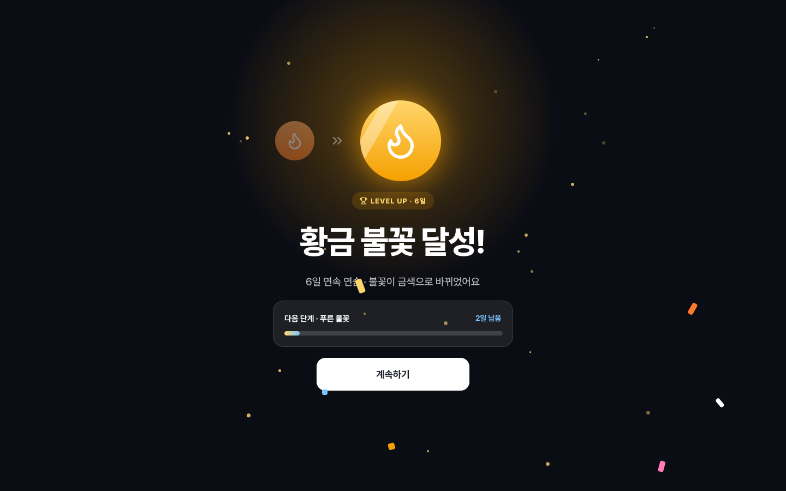
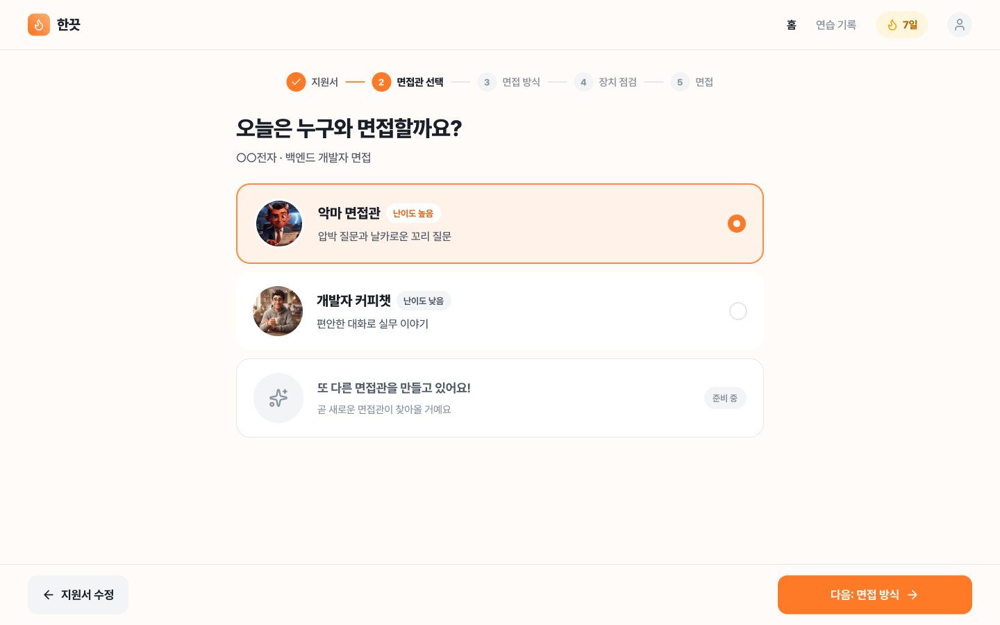
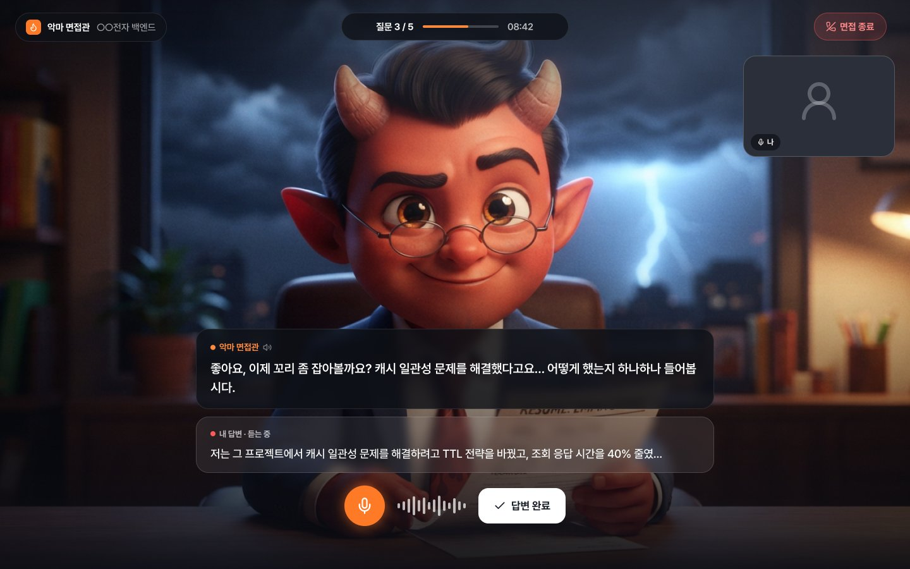
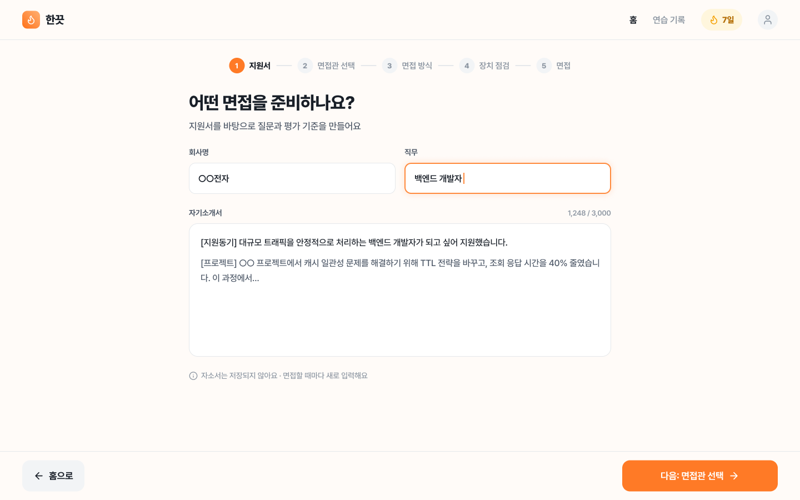
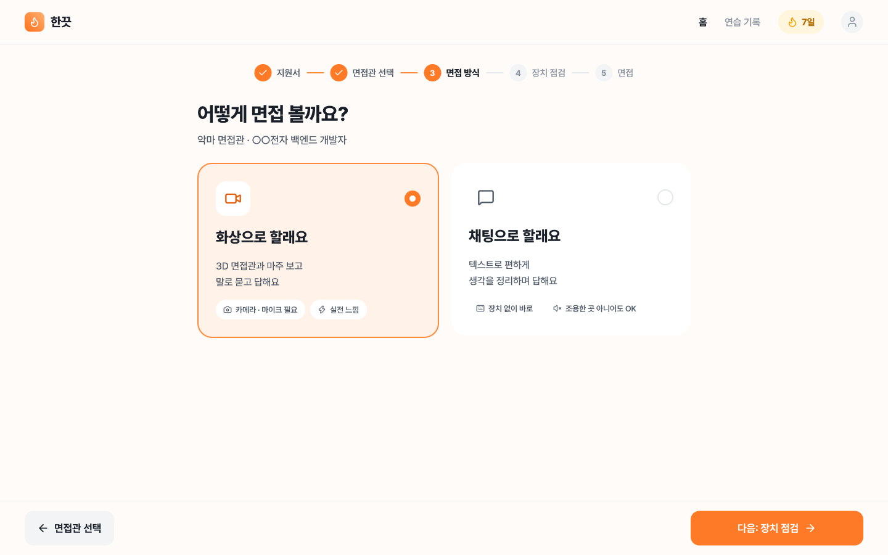
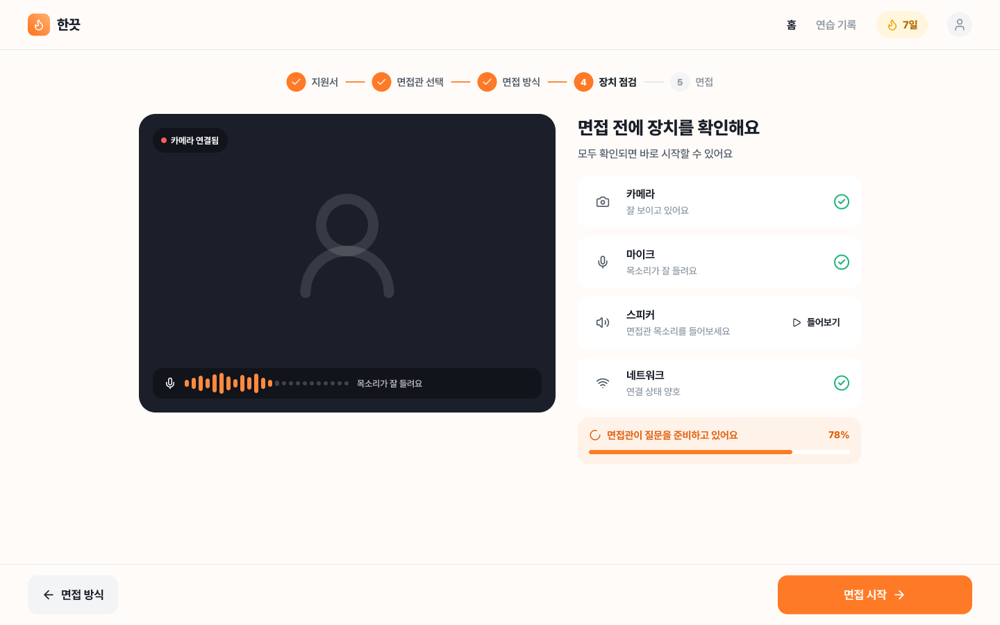
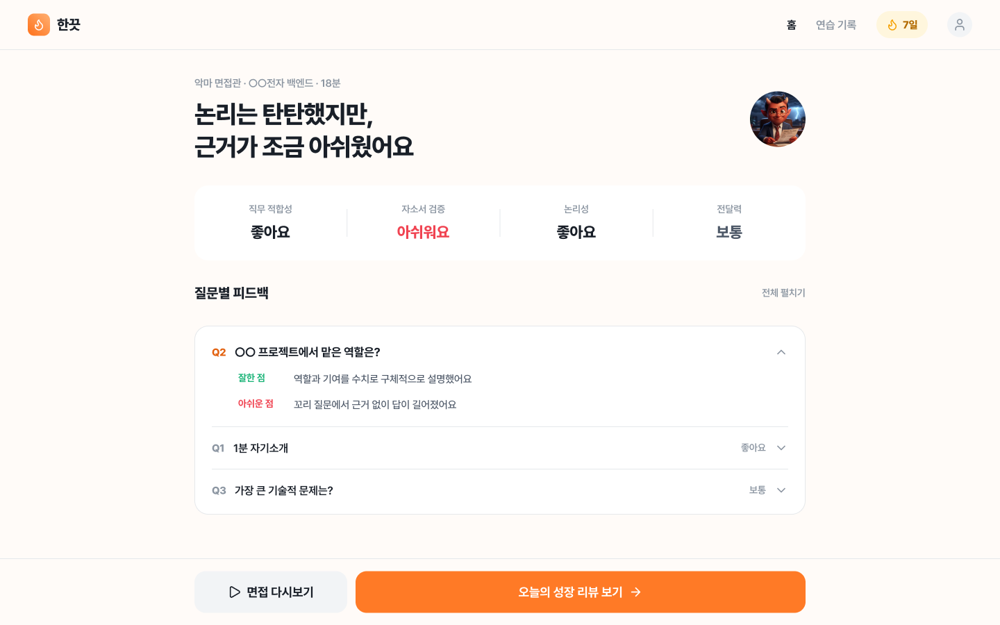
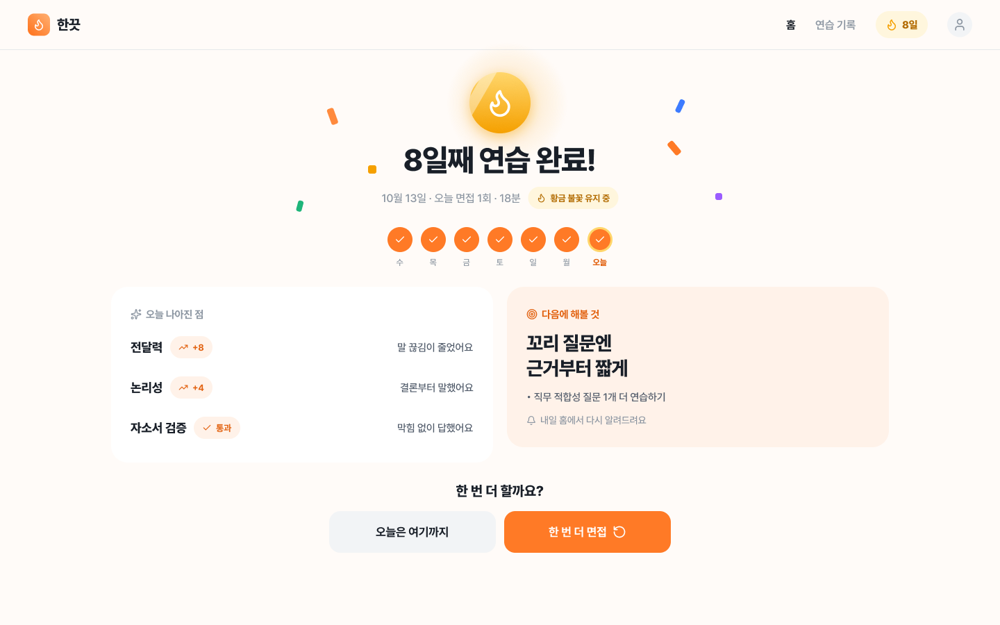
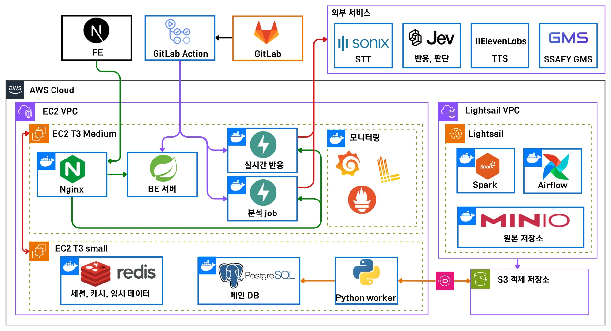

면접 준비를 습관으로
말하는 동안 반응하는 3D 면접관과 매일 10분
면접 준비,
시작은 쉬운데
이어가기가 어렵습니다

며칠째 연습 중인지 홈 첫 화면에
점수 대신 오늘 나아진 점과 다음에 해볼 것
연속 기록이 쌓이면 불꽃 단계가 올라갑니다


압박 질문과 날카로운 꼬리 질문
편안한 대화로 실무 이야기
매일 다른 상대와 연습할 이유를 만듭니다

끄덕임, 갸웃 같은 표정과 동작으로
STT로 듣고 TTS로 묻습니다
면접관마다 다른 말투와 배경
가설 검증에 필요한 만큼만 MVP로
SSAFY 교육생 대상, 3일 연습하면 설문(선택) + 스트릭 기록
습관이 됐는지 보고 유지하거나 방향을 바꿉니다
페이지 별로 알아봅시다






회사 · 직무
자기소개서
자소서의
경험 · 수치를 뽑습니다
주장을 파고드는
질문과 채점 기준
답변은 듣는 즉시 텍스트로, 질문은 생성되는 즉시 소리로
마이크 음성을
0.1초씩 실시간 전송
말하는 도중 바로 받아쓰기
한·영 섞인 개발 용어까지
받아쓴 문장과
단어마다 말한 시각
합성되는 대로 바로 재생
발음 시각에 맞춰 입 모양
스트리밍 음성 합성
글자별 발음 시각도 함께
LLM이 지원서로 질문 작성
답변 따라 꼬리질문 추가
STT로 받은
텍스트
4개 항목을
3단계로 판정
자소서 내용과
맞는지 확인
감정표현이 아니라 면접관이 할만한 반응으로 고도화
감사합니다
오늘부터 1일째, 함께 시작해 볼까요?
Q&A